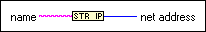
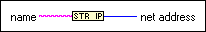

String To IP Function
Owning Palette: TCP VI and Functions
Requires: Base Development System
Converts a string to an IP network address or an array of IP network addresses.

 Add to the block diagram Add to the block diagram |
 Find on the palette Find on the palette |
Owning Palette: TCP VI and Functions
Requires: Base Development System
Converts a string to an IP network address or an array of IP network addresses.

| Add to the block diagram |
Find on the palette |
The String To IP function accepts standard decimal, octal, or a combination of both number systems. If you enter a leading zero into a string, the String To IP function interprets the string as an octal number.
If String To IP is in single output mode, the net address is the first result returned by the operating system resolver. If String To IP is in multiple output mode, the result is an array of all IP network addresses returned by the operating system resolver. If the node fails to convert the string, the result is a value of zero in single output mode or an empty array in multiple output mode.
To switch between single output and multiple output modes, right-click the node and select Multiple output from the shortcut menu.
Refer to the UDP Multicast.lvproj in the labview\examples\Data Communication\Protocols\UDP\UDP Multicast directory for an example of using the String To IP function.
 Open example Find related examples
Open example Find related examples